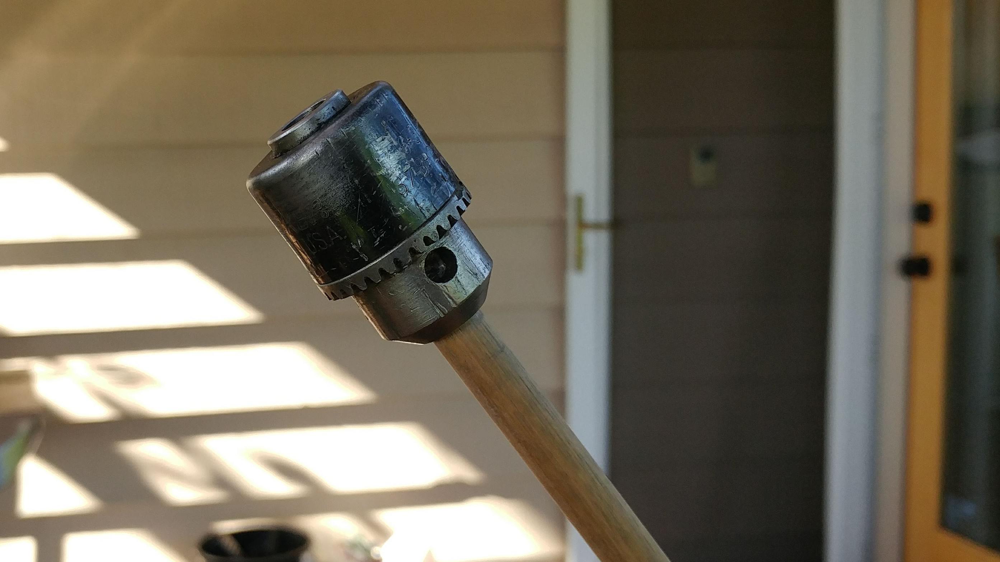
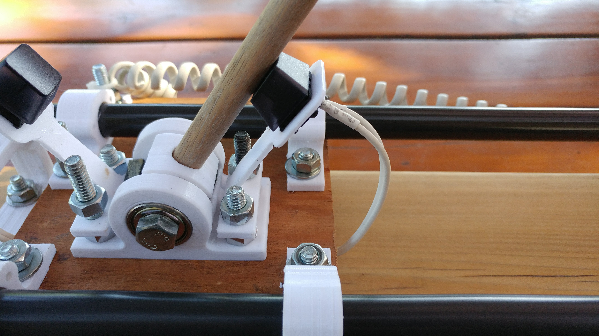
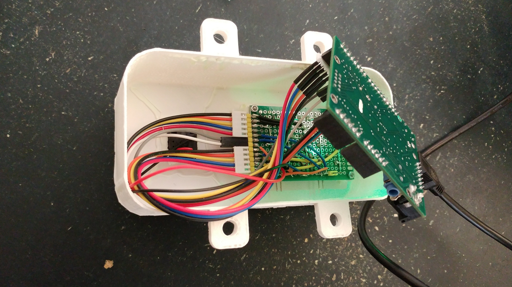

The cedar-wood base is light, strong, and even smells nice. Anodized aluminum rods and polymer bushings give a smooth, sliding action and minimal play. Durable 3D-printed PETG holds it all together.
A classic drill chuck raises the center of mass of the stick, and adds an old-timey flair. No drills were harmed in the making of this game.
Many of the materials are repurposed or reclaimed, including the wood, the linear guides, the wiring, and they keyswitches. No materials were bought for the project.
One button-press starts the countdown. At 0, the timer starts, giving one point per half-second stays up. When the stick falls, it triggers a switch to end the timer and display the score as a single hexadecimal digit.
The game is driven by a Braduino™ microcontroller board. A homebrew LED matrix shines through the printed case to show score.
Page style inspired by this, css shamelessly stolen from here.